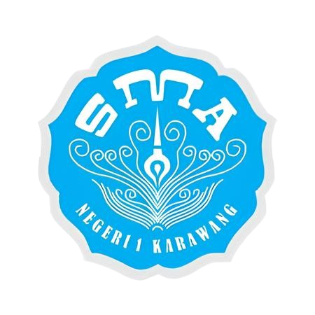

Berkarakter dan Berbudaya, Smansaka Juara
Mengembangkan karakter dan kompetensi siswa berdasarkan nilai-nilai Pancasila
Metode pembelajaran yang mendorong siswa untuk memecahkan masalah melalui proyek praktis
Fokus pada pengembangan kemampuan membaca, menulis, dan berhitung
Penanaman nilai-nilai positif dalam setiap aspek pembelajaran
Sebagai implementasi Kurikulum Merdeka, SMAN 1 Karawang menyelenggarakan berbagai projek untuk mengembangkan karakter dan kompetensi siswa.
Kegiatan yang meningkatkan kepedulian sosial dan lingkungan dalam bentuk aksi nyata
Pengembangan jiwa wirausaha dan inovasi melalui praktik bisnis
Peningkatan kemampuan siswa dalam menggunakan teknologi digital secara bijak
Eksplorasi dan pelestarian kekayaan seni dan budaya Indonesia
Kami menerapkan sistem pembelajaran yang komprehensif untuk mendukung pengembangan potensi siswa:
Menerapkan pendekatan pembelajaran yang berpusat pada siswa dengan metode aktif, kreatif, dan menyenangkan
Penilaian dilakukan secara komprehensif meliputi aspek pengetahuan, keterampilan, dan sikap
Kombinasi pembelajaran tatap muka dan daring untuk memaksimalkan hasil belajar siswa
Sistem penilaian di SMAN 1 Karawang dirancang untuk mengukur aspek kognitif, afektif, dan psikomotorik siswa:
Kami memiliki program khusus untuk membina siswa berprestasi dalam berbagai bidang: